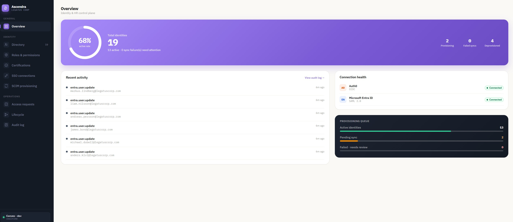
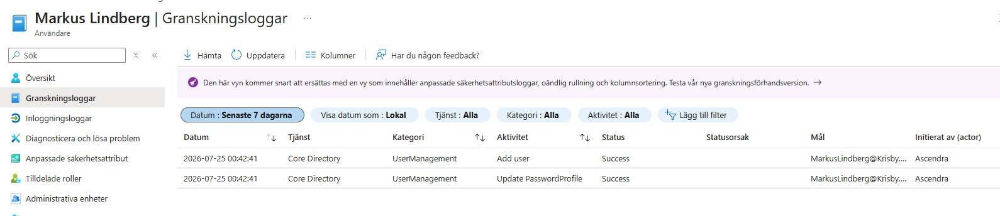
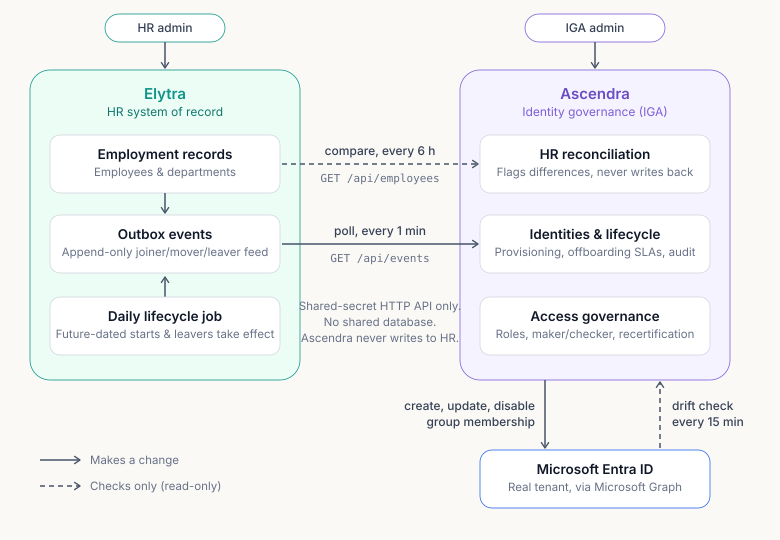
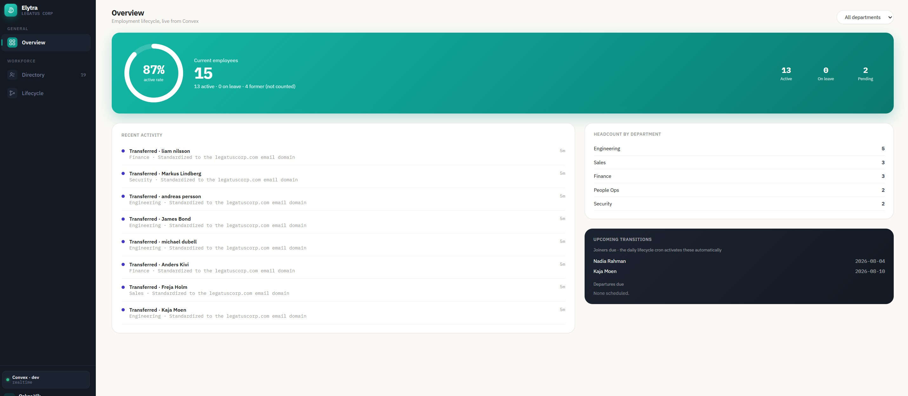

IAM work sample · Andreas Krisby
An HR change.
Real changes in Entra.
Two independent applications connect employment data to real account provisioning and non-human identity oversight. I used the lab to investigate what happens when offboarding, access decisions and synchronization disagree.

My decisions and hands-on work
What I brought to the lab.
I set the learning goal: follow employment changes into a real directory and investigate failures. I configured the Entra app registration, permissions and integration credentials, ran the systems, and tested a resync that re-enabled a leaver. I requested an architecture review, evaluated the findings and checked the original fixes against the live lab.
The result
Provisioning that reaches a real tenant.
The lab creates, updates and disables real Entra accounts through Microsoft Graph. Mapped group grant and revoke were also verified against the lab tenant during the original hardening work.
The audit capture shows successful user creation and a password-profile update. It is historical evidence, not live tenant status.

Why two systems?
Employment and access have different owners.
Employee active · HR database
Employee active · IGA database
Account enabled
1 / 6 · HR records the departure.
Illustrative flow · No tenant connection · Timing is condensed. The outbox retains its event.
Explore database tables and failure scenarios
Follow the event cursor, quarantine and Graph failure recovery in the full demonstration.
Open the detailed system anatomy ↗I wanted to follow Joiner, Mover and Leaver changes across that boundary. Each app has its own Convex database. HR changes enter an outbox; Ascendra pulls them over HTTP and schedules provisioning. Reconciliation checks for differences the event feed can miss.
Non-human identities · NHI
A person leaves. Their automation may keep running.
Ascendra links application and automation identities to accountable owners and flags ownership and credential risks. In the lab's Finance Reconciliation Job scenario, offboarding the owner triggers a terminated_owner finding while the automation remains active. That separates an employee's account lifecycle from the access their automation still holds.
A failure worth investigating
A resync brought a leaver's account back.
While testing against Entra, I found that a legitimate resync could re-enable a terminated employee. The Graph call succeeded; the account state was wrong.
The original fix made account state depend on both HR facts and IGA decisions. I verified the original hardening work against live deployments. It taught me to check the target system, not treat a successful request as proof of correct access.
Actual lab and explanatory simulation
Watch the lab. Explore the explanation.
The existing recording follows offboarding in the real lab and investigates account drift. It documents the session-revocation gap at that earlier stage; it does not verify the later fix.
A new recording with dated disable, session-revocation and membership evidence is pending. The simulation is illustrative and has no tenant connection.
For a closer look
Choose the technical detail.
Operations: Graph permissions, credentials, alerts and retry
App-only Graph access: the lab provisions users through User.ReadWrite.All and reads verified domains through Organization.Read.All. Session revocation requires User.RevokeSessions.All; ordinary mapped group membership changes require GroupMember.ReadWrite.All. Optional NHI discovery reads application and owner metadata with Application.Read.All / Directory.Read.All. These are documented operation requirements, not a claim that every permission is currently granted in the tenant.
Microsoft documents User.EnableDisableAccount.All plus User.Read.All as the least-privileged combination for accountEnabled. Target account roles can impose additional requirements. The lab's broader user provisioning permission should not be presented as a least-privilege design. User updates · Session revocation · Membership removal
Credentials: the backend reads the Entra client secret and integration Bearer secret from Convex environment variables. The browser receives neither secret. Access tokens are requested server-side. The implementation does not provide automatic secret rotation; NHI expiry findings are a review signal, not a rotation service.
Alerts: failed Graph operations appear in sync/audit events and failed lifecycle steps. HR poll health and dead-letter events provide visible integration signals. There is no configured email or paging service. Retry: an operator retries the failed lifecycle step or uses Resync; there is no general automatic Graph retry/backoff loop. Account reconciliation runs every 15 minutes; HR snapshot reconciliation every six hours.
Architecture: outbox, separate databases and reconciliation
Elytra and Ascendra have independent React/Vite frontends, operator authentication and Convex deployments. They communicate through a shared-secret-authenticated HTTP API, with no shared database or cross-deployment Convex calls. Ascendra never writes into HR.
Elytra changes the employee, adds lifecycle history and appends an outbox event inside one atomic mutation. A sequence counter orders events. Each event includes an employee snapshot and the original occurrence time; reading the feed does not delete it.
Every minute, Ascendra reads its own saved cursor and requests GET /api/events?since=…. Ingest accepts additive fields, quarantines malformed events and records critical audit evidence. Valid identity changes, cursor progress and scheduled work commit in Ascendra's own database.
Graph calls run separately, after that commit. An advanced ingest cursor proves local handling, not a successful account write. Every six hours, Ascendra reads HR employee and department snapshots to detect divergence and deduplicate findings; this check is detection-only. Every 15 minutes, account reconciliation checks Entra, disables accounts that should be disabled and flags unexpectedly disabled accounts for review.

Lifecycle: Joiner, Mover, Leaver and sessions
A Joiner becomes an employee record in Elytra and an identity in Ascendra before provisioning reaches Entra. Future-dated starts and departures are processed by Elytra's daily transition job at 02:00 UTC.
A Mover changes employment context such as department or job title. Those facts are synchronized, but that does not mean every old entitlement is automatically reviewed or replaced. The lab separates employment updates from access decisions.
A Leaver is deprovisioned locally, then a scheduled action disables the Entra account and calls revokeSignInSessions. The “Access revoked” lifecycle step completes only after both succeed. Existing access tokens may remain valid; this is not an instant logout guarantee for every application.
FinanceApp SCIM synchronization and evaluation of non-human identities owned by the departing employee are separate downstream effects. Microsoft Graph provisions Entra; SCIM is used for the downstream application.
Governance: operator roles, maker/checker and recertification
SecurityAdmin, AccessAdmin, Auditor and HelpDesk have distinct capabilities. These operator permissions are separate from the roles assigned to managed employees.
A privileged role grant or deprovisioning of a still-employed worker becomes a pending request. A different operator must approve it; the requester cannot approve their own request.
Recertification campaigns snapshot role holders for Keep or Revoke decisions. Unresolved items are revoked when the campaign closes. If the original grantor is recorded, that operator cannot affirm their own grant. Older grants without grantor history cannot enforce that check.
For a role mapped to an Entra group, revocation schedules membership removal and logs the result separately. A local role change does not guarantee a successful target removal. An unmapped role produces an explicit unenforced-revocation audit event.
NHI: ownership, credential risk and Entra discovery
The NHI register models service principals, app registrations, automation accounts, API keys and service accounts. Each record can link to a managed employee identity and carry business criticality, permission metadata, credential expiry and a last-use timestamp.
Offboarding and deliberate deprovisioning schedule risk evaluation for the owner's NHIs. Active records are checked for absent or departed owners, use after termination when timestamps are available, expired or soon-expiring credentials, more than one year of remaining credential validity, broad permission labels and stale low-criticality use. Findings can be reviewed, with audited local ownership transfers and risk acceptance.
Optional read-only Microsoft Graph discovery imports a bounded page of Entra app registrations, owner information, credential expiry metadata and declared resource-permission IDs. Owner email is matched to an Ascendra identity. This is not a complete service-principal inventory or an effective-permissions audit. Imported permission IDs are not resolved to scope names, so the broad-permission heuristic cannot fully assess those imported entries.
Scope: NHI Disable, Rotate secret, Reduce permissions and owner transfer update the lab's records; they do not perform those changes in Entra. Last-use checks use recorded or seeded timestamps, not a live Graph sign-in-log feed. The Finance Reconciliation Job is seeded demo data. NHI behavior is implemented and covered by the risk test suite; this page does not claim a newly verified live NHI remediation.
Explore the source repository ↗Hardening: the defects, regression checks and limits
An architecture review exposed a stalled feed caused by malformed events, lost source timestamps, missing HR reconciliation and a departure during leave of absence that never completed. The original fixes were verified against live deployments. The hardening plan records their scope and deliberately deferred work.
The later regression review found that recording a Graph failure could replace deprovisioned with error. For a still-employed worker, later resync could then interpret the identity as activatable. The local fix preserves revocation intent and records synchronization failure separately in sync/audit events and lifecycle steps.
Regression evidence, 13 October 2026: start with an active employee deliberately deprovisioned in IGA, record a failed disable or session-revocation operation, and resolve desired state again. Expected and actual: the decision remains deprovisioned and account activation stays false. All 45 tests and the Ascendra production build passed. The new backend change is not yet deployed or verified live.
There is no general automatic Graph retry/backoff loop. An operator retries a failed lifecycle step or uses Resync. HR reconciliation is detection-only; Entra account drift checks do not implement group drift repair. Multi-role identities and a complete role-to-group provisioning subsystem remain outside the lab's scope.
Auth0 and generic SCIM screens contain simulated or seeded state. The screenshots are historical captures. Account and membership state alone do not prove successful application sign-in.
Read the original hardening plan ↗Screenshots and earlier project writeups

The Swedish writeups describe earlier project stages and carry version notes. They are useful history; the current portfolio distinguishes historical live verification from the later local regression fix.
Andreas Krisby
Learning IAM by checking what actually happens.
I'm working toward my first IAM role. This work sample shows how I connect business context to access, investigate an integration and distinguish a local decision from a verified target-system change.